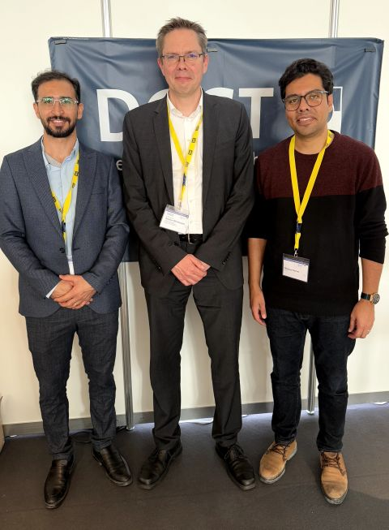
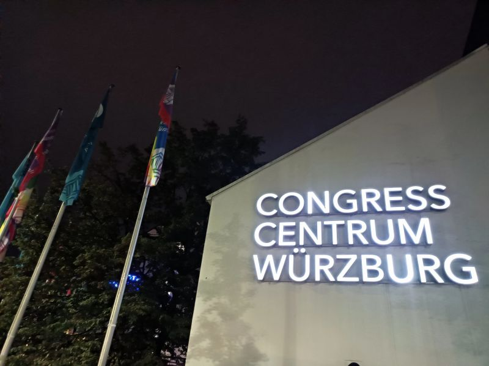
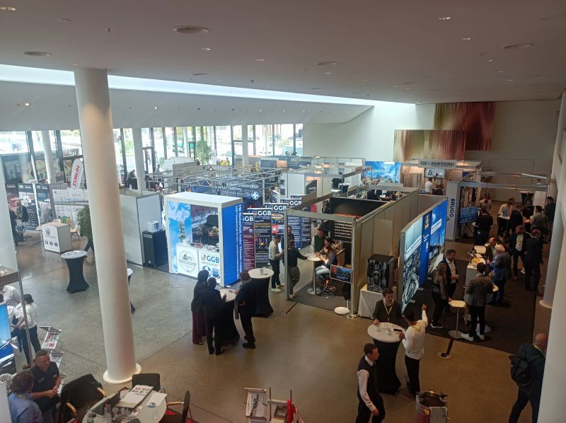
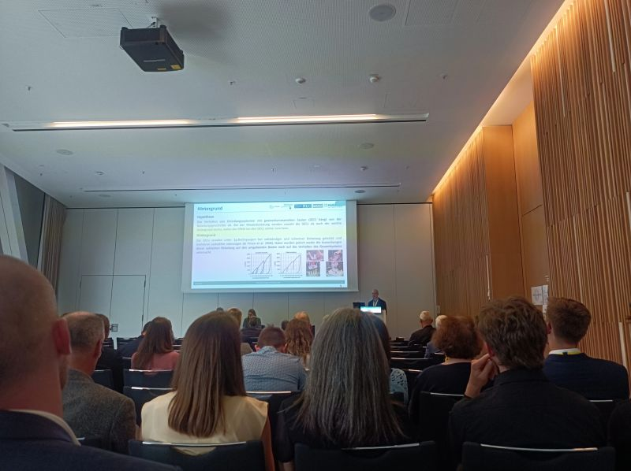
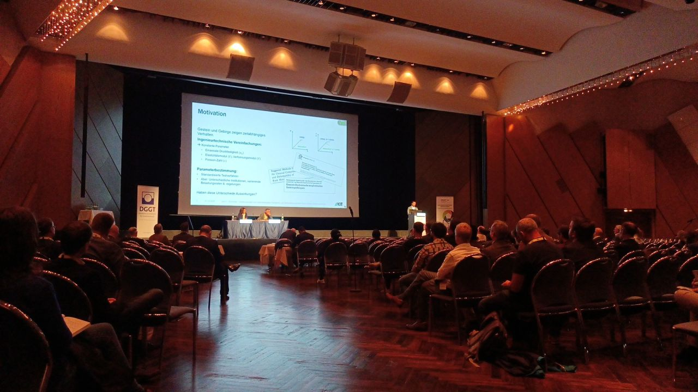

Fachsektionstage Geotechnik 2025
Vom 6. bis 8. Oktober 2025 hatte ich die wertvolle Gelegenheit, gemeinsam mit dem Junge-DGGT-Team an den Fachsektionstagen Geotechnik 2025 in Würzburg teilzunehmen.
Die von der DGGT organisierte Veranstaltung brachte Fachleute, Forschende und Unternehmen zusammen, um aktuelle Entwicklungen in der Geotechnik zu diskutieren – von Boden- und Felsmechanik über Umweltgeotechnik bis hin zu innovativen Baustoffen und neuen technischen Ansätzen.
Die Vorträge, Fachsitzungen und Gespräche waren für mich sehr inspirierend und fachlich bereichernd. Gleichzeitig bot die Veranstaltung eine ausgezeichnete Möglichkeit, Kontakte zu Fachleuten und Unternehmen zu knüpfen, Ideen auszutauschen und über zukünftige berufliche Perspektiven zu sprechen.
Ein besonderer Dank gilt der Jungen DGGT für diese wertvolle Erfahrung und für das engagierte Umfeld, das jungen Ingenieurinnen und Ingenieuren einen fachlichen Austausch auf hohem Niveau ermöglicht.
Weitere Informationen zur Veranstaltung



